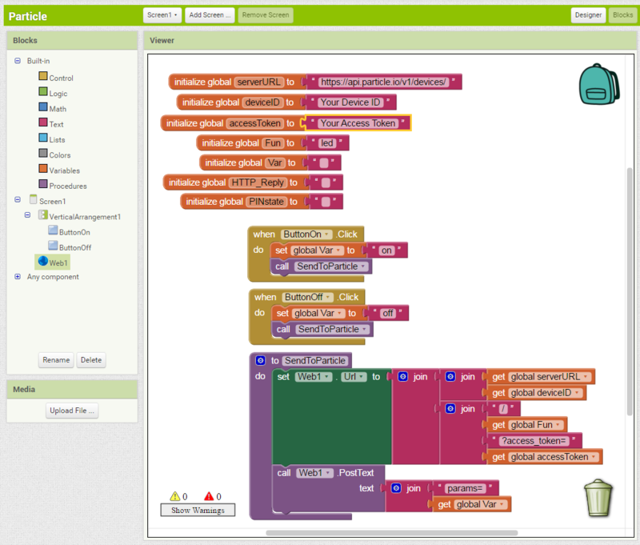
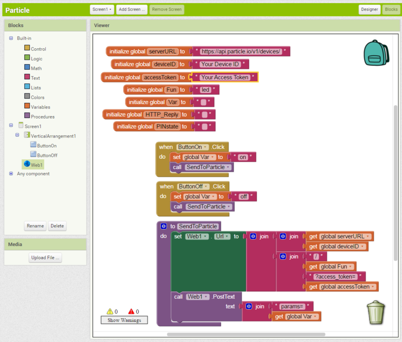
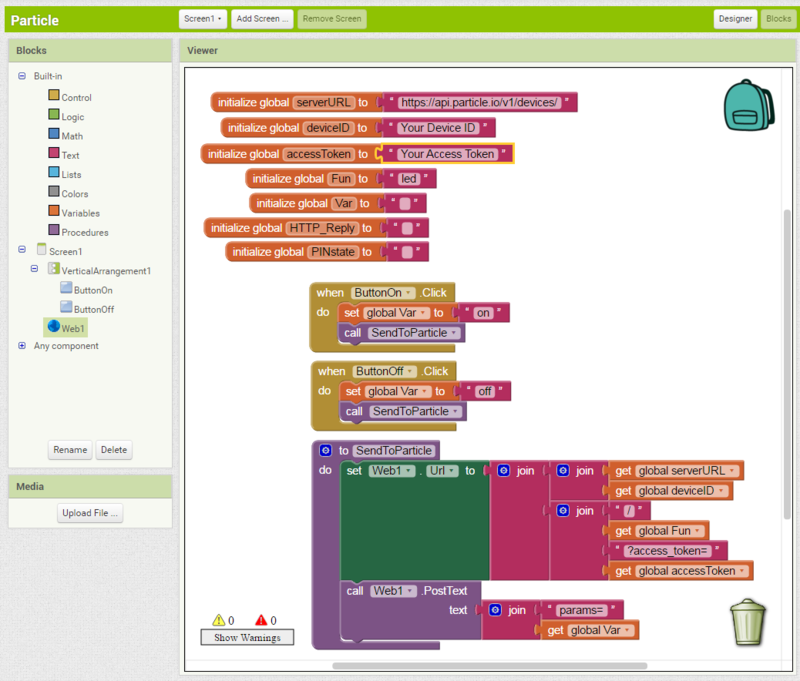

Explica los elementos básicos del entorno de desarrollo integrado, reconociendo problemas específicos, con la finalidad de lograr la elaboración de aplicaciones android de una manera consiente en su contexto. Diseña aplicaciones que integren diferentes servicios del dispositivo android, empleando enfoques transversales logrando así sistematizar un proceso promoviendo así su creatividad.
Desarrolla apps mediante la utilización de las herramientas, demostrando el uso del pensamiento lógico, logrando así el diseño de interfaces gráficas de usuario asumiendo la frustración como parte del proceso dentro del entorno de desarrollo. Prepara los recursos requeridos para la publicación de la app, para resolver situaciones de forma consciente en ambientes laborales, educativos y profesionales en sus diferentes contextos.
